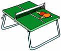
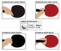

Table Tennis Rules

Rules
- The winner of(3 out 5)(5/7 or7/9) shall be declared winner.
- The ball shall be spherical in shape, shall be orange or white in colour.
- Service shall commence with the ball resting freely on the palm of the server, thereby allowing the opponent to be prepared before
serving.

- The rally shall be a let, meaning if the ball touches the net while serving, the service shall be repeated.
- A game shall be won by the player first scoring 11 points, unless both player scores 10 points then shall the game be won by the first gaining a lead point of two
- A match shall be decided between the best of any odd number of games.